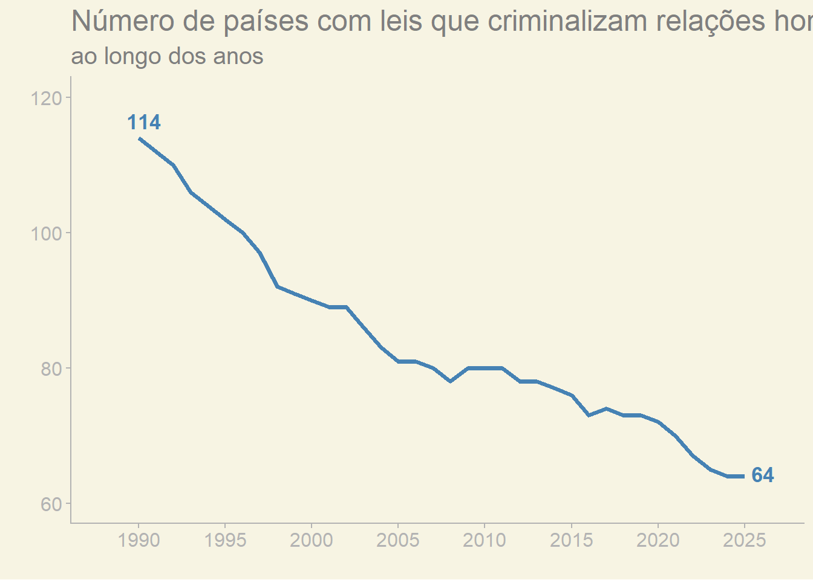
Contar para existir: a comunidade LGBTQIAPN+ nas estatísticas
apresentação
pesquisa
pesquisa desenvolvida dentro do PET Estatística e apresentada na 1ª Semana Científica LGBTQIAPN+ da UFU
NOTAS
Notas
Esta apresentação é fruto de uma pesquisa feita em grupo que conduzi dentro do PET Estatística para apresentar na 1ª Semana Científica LGBTQIAPN+, evento idealizado pelo PET Geografia.
O que verá aqui é o resultado de um trabalho árduo de levantamento, tratamento, análise e vizualização de dados.
Introdução
1 2 3 4 5 6
Motivação
1 2 3 4 5 6
Imagine tentar contar a história de uma cidade sem mencionar um terço de seus moradores. Ou desenhar um mapa com buracos gigantes onde deveriam estar ruas, casas e pessoas. Isso é exatamente o que acontece quando não coletamos dados.
A importância dos dados
1 2 3 4 5 6
A importância dos dados
1 2 3 4 5 6
- Elaboração de políticas públicas
identificam subnotificação de crimes de ódio contra a comunidade LGBTQIAPN+
A importância dos dados
1 2 3 4 5 6
- São documentos históricos
dados são também uma fotografia do momento atual; com eles podemos entender melhor sobre o passado, saber quem somos e para onde podemos ir
1 2 3 4 5 6
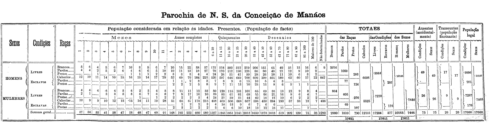
Apagamento
1 2 3 4 5 6
Apagamento
1 2 3 4 5 6
- os povos indígenas só foram recenseados a partir de 1991

Apagamento
1 2 3 4 5 6
- a SEJUSP possui um painel dinâmico sobre LGBTfobia, por um bom tempo ele ficou indisponível.
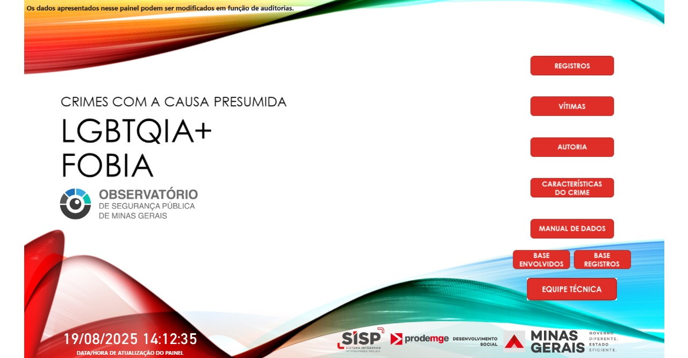
Apagamento
1 2 3 4 5 6
dificuldade em se obter os dados.
o primeiro levantamento feito sobre orientação sexual feito pelo IBGE foi realizado em 2019. Nele não há registros sobre identidade de gênero.
Violências contra a comunidade
1 2 3 4 5 6
Ao redor do mundo
1 2 3 4 5 6
A International Lesbian, Gay, Bisexual, Trans and Intersex Association (ILGA) é um conjunto de organizações que lutam pelos direitos das pessoas LGBTQIAPN+. Em sua página, divulgam diversas notícias, e dados sobre o assunto.
1 2 3 4 5 6

1 2 3 4 5 6

Violência no Brasil
1 2 3 4 5 6
Anualmente o Instituto de Pesquisa Econômica Aplicada (IPEA) divulga o atlas da violência. Um relatório que aborda a violência contra diversos grupos sociais, incluindo a população LGBTQIAPN+.
1 2 3 4 5 6
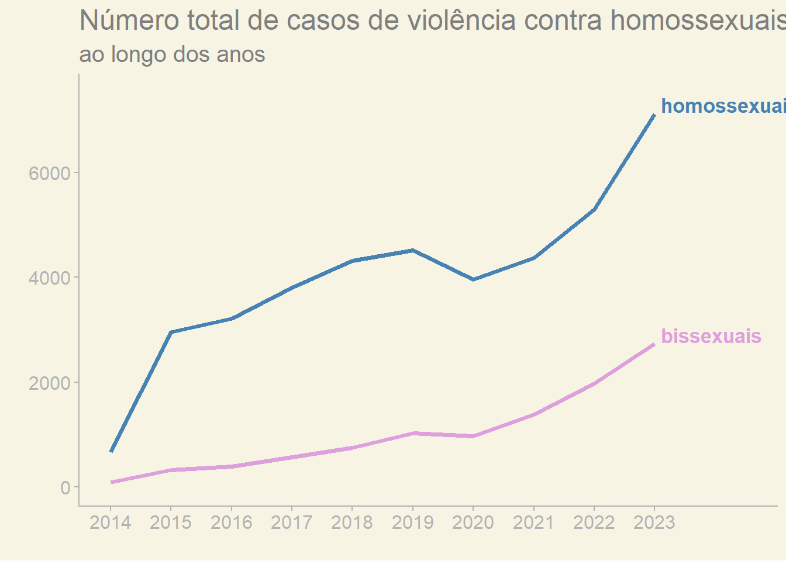
1 2 3 4 5 6
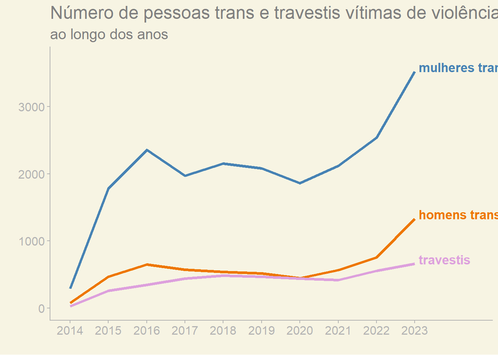
LGBTfobia em Minas Gerais
1 2 3 4 5 6
A Secretaria de Estado de Justiça e Segurança Pública (SEJUSP) é o órgão do estado de Minas Gerais que disponibiliza dados de crimanalidade no estado. A sua base de LGBTfobia tem dados a partir de 2016
1 2 3 4 5 6
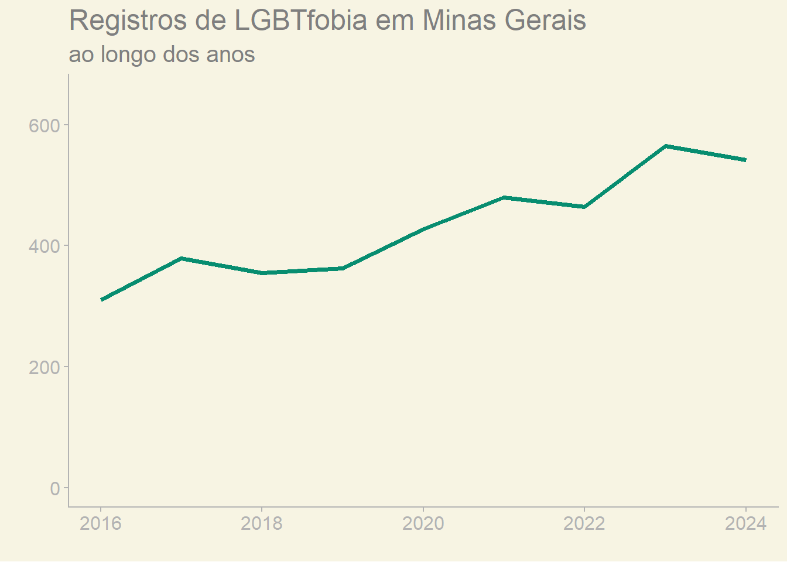
1 2 3 4 5 6

1 2 3 4 5 6
| Município | Taxa |
|---|---|
| Fernander Tourinho | 3.6 |
| Chácara | 3.2 |
| Dom Vicoso | 3.2 |
| Cordislândia | 3.1 |
| Maripá de Minas | 2.9 |
LGBTfobia em Uberlândia
1 2 3 4 5 6
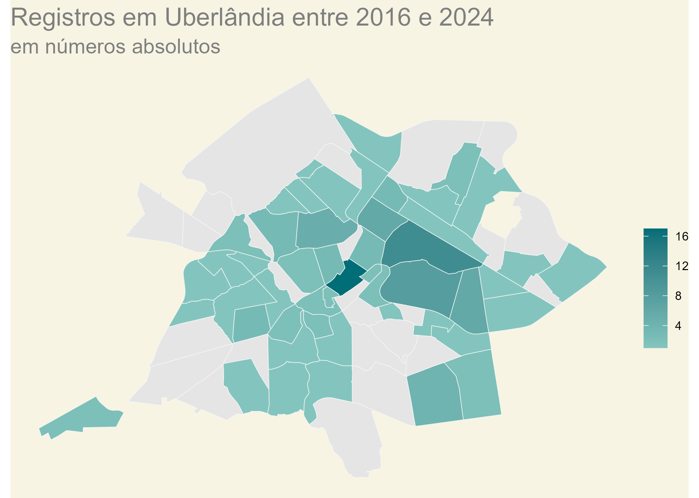
1 2 3 4 5 6
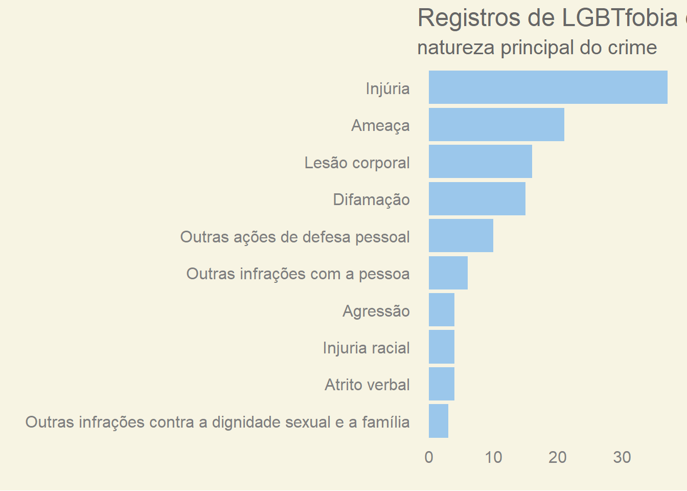
Casamentos
1 2 3 4 5 6
Contextualização
1 2 3 4 5 6
Primeiro reconhecimento veio por uniões civis/registradas, com direitos limitados.
Desde 1989, cresce o número de países que permitem casamento entre pessoas do mesmo sexo.
O casamento entre pessoas do mesmo sexo garante acesso igualitário aos direitos, deveres e proteções tradicionalmente reservados a casais heterossexuais.
1 2 3 4 5 6

1 2 3 4 5 6

Casamentos no Brasil
1 2 3 4 5 6
A união estável entre pessoas do mesmo gênero foi permitida em 2011 no Brasil. Contudo, só em 2013 ocorreu a legalização do casamento homoafetivo, só a partir desse momento a obtenção desses dados se tornou possível.
1 2 3 4 5 6
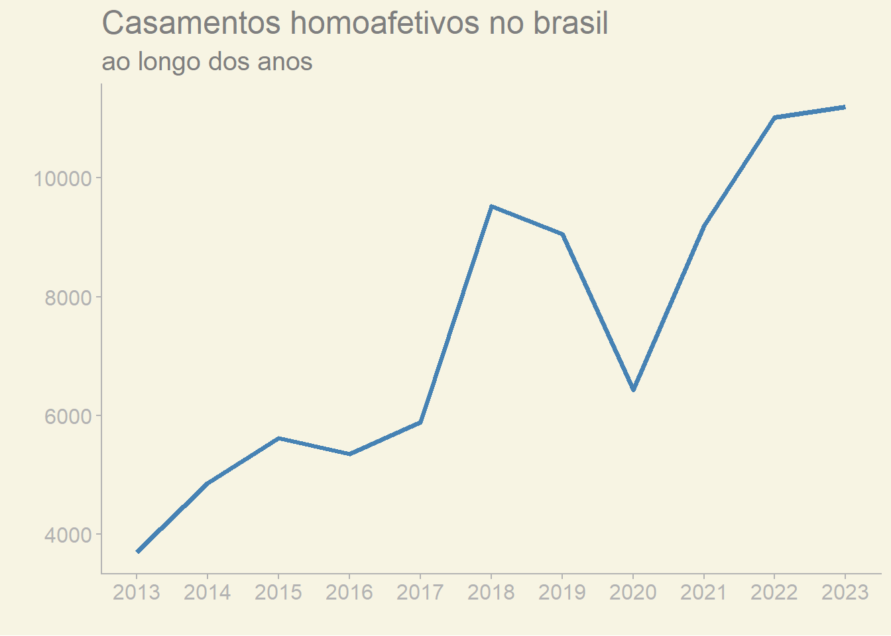
1 2 3 4 5 6
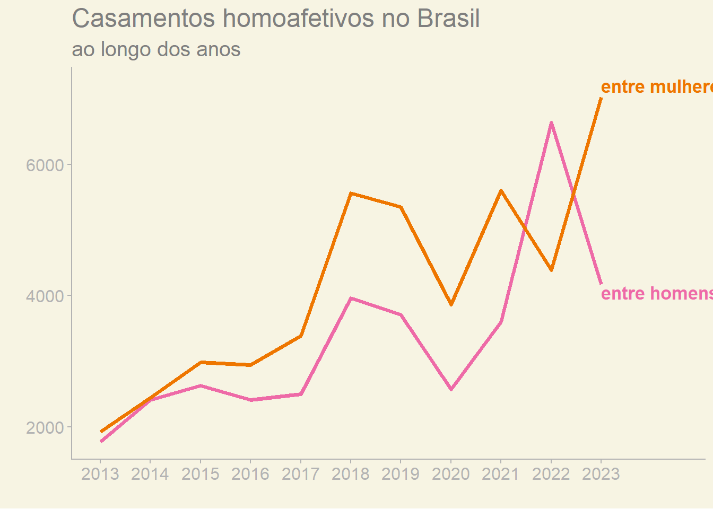
1 2 3 4 5 6

1 2 3 4 5 6
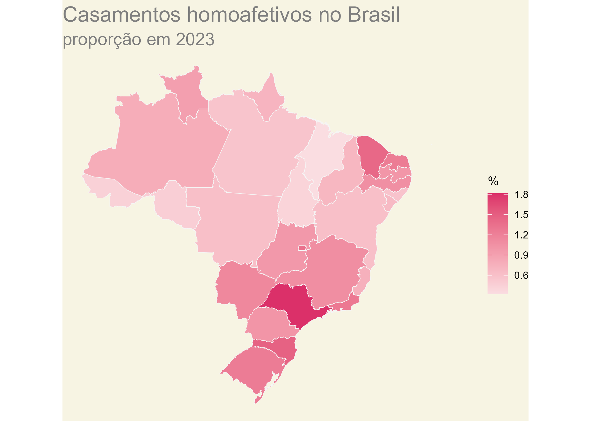
O novo sempre vem
1 2 3 4 5 6
1 2 3 4 5 6
#|label: filmes_lgbt
#|echo: false
#|warning: false
filmes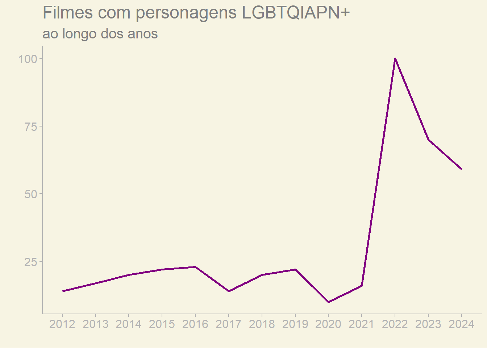
1 2 3 4 5 6

1 2 3 4 5 6

1 2 3 4 5 6
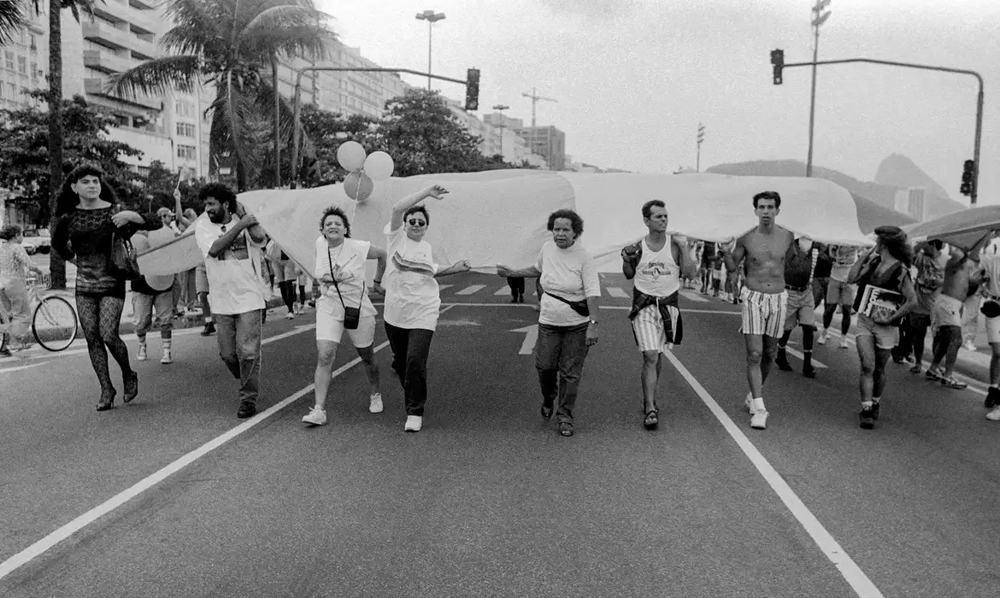
1 2 3 4 5 6
Referências
- IBGE - Instituto Brasileiro de Geografia e Estatística
- ILGA - International Lesbian, Gay, Bisexual, Trans and Intersex Association
- SEJUSP - A Secretaria de Estado de Justiça e Segurança Pública de Minas Gerais
- IPEA - Instituto de Pesquisa Econômica Aplicada